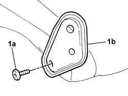

7050A39 JOINT/HINGES of a squab, left or right, of split rear seat - R.R .
- Path
- Procedures > 70 FITTINGS > 7050 REAR SEATS > 7050A rear seat assembly > 7050A39 JOINT/HINGES of a squab, left or right, of split rear seat - R.R .
- Kind
- repair procedure (removal / refitting; the operation number is the code)
- Applies to
- all engines; all production periods
- Interactive page
- https://sloeber94.github.io/elrnDB-fPnd/en/#/2753268
Applies to: all engines; all production periods
 Removing
Removing
 Refitting
Refitting1. Undo the fixing bolt (1a) and remove the backrest joint (1b).

Applies to: all engines; all production periods
Refitting
RemovingFit the joint in its housing and tighten the fixing bolt to torque.
 | Fastening | Component | Ø | Value (daNm) |
|---|---|---|---|---|
- | Bolt | REAR SEAT BACKREST JOINTS. | - | 3.5 |